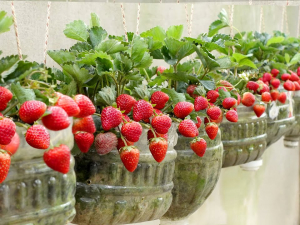

заробляти на полуниці легко
Чудо-ягідниці зроблять усе за вас,
тільки не забувайте про полив!

Приносить частий якісний урожай гігантської полуниці


Екологічно чистий сорт, преміум-селекція

В упаковці є все необхідне для вирощування

Насіння підходить для вирощування вдома і на дачі

Не вимагають складного догляду
123 грн
50%
Стара ціна 321 грн
Акція триватиме ще: : :